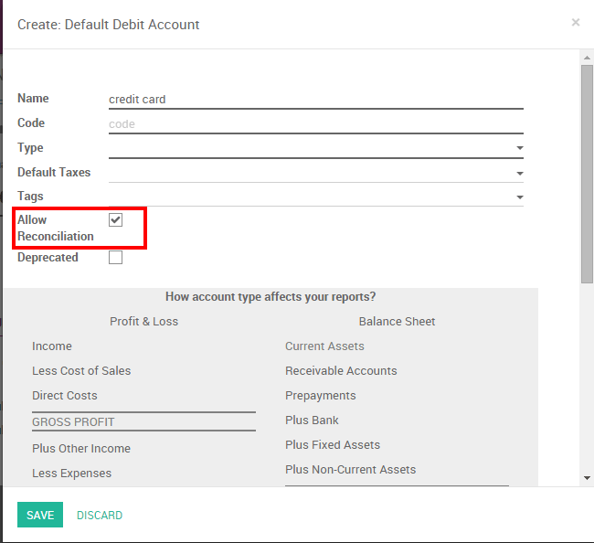
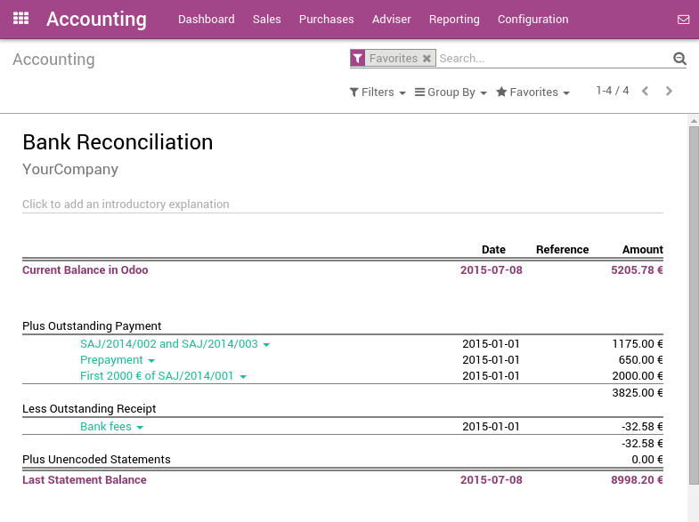

There are two ways to handle payments received by credit cards. Odoo support both approaches so that you can use the one that better fits your habits.
- Undeposited Funds (mostly used in european countries): once you receive the credit card payment authorization, you record a payment by credit card on the invoice (using a Credit card journal and posted on the Undeposited Fund account). Then, once the credit card payments arrives in your bank account, move money from Undeposited Funds to your bank account.
- One journal entry only (mostly used in the U.S.): once your receive the credit card payment, you record a payment on your bank, paid by credit card, without going through the Undeposited Funds. Once you process your bank statement, you do the matching with your bank feed and the credit card payment, without creating a dedicated journal entry .
We recommend the first approach as it is more accurate (your bank account balance is accurate, taking into accounts credit cards that have not been cashed yet). Both approaches require the same effort.
If you use eCommerce and an automated payment gateway, you will only need to take care of the bank reconciliation part as paid invoice will be automatically recorded in the right journal. You will use the second approach.
Even if the first method is cleaner, Odoo support the second approach because some accountants are used to it (QuickBooks and Peachtree users).
Option 1: Undeposited Funds
Configuration
On the Accounting module, go to
Create a Journal called 'Credit card payments' with the following data:
- Journal Name: Credit card
- Default debit account: Credit cards
- Default credit account: Credit cards
Be careful that the account type should not be "Bank and Cash". Once it's done, don't forget to set the "Credit cards" account as "Allow Reconciliation".
From credit card payments to bank statements
The first way to handle credit cards is to create a credit card journal. Thus, credit cards become a payment method in itself and you will record two transactions.
Once you receive a customer credit card payment, go to the related invoice and click on Register Payment. Fill in the information about the payment:
- Payment method: Credit card
- Memo: write the invoice reference

This operation will produce the following journal entry:
| Account | Statement Match | Debit | Credit |
|---|---|---|---|
| Account Receivable | 100.00 | ||
| Credit Cards | 100.00 |
The invoice is marked as paid as soon as you record the credit card payment.
Then, once you get the bank statements, you will match this statement with the credit card that is in the 'Credit card' account.
| Account | Statement Match | Debit | Credit |
|---|---|---|---|
| Credit cards | X | 100.00 | |
| Bank | 100.00 |
If you use this approach to manage credit cards payments, you get the list of credit cards payments that have not been cashed in the "Credit card" account (accessible, for example, from the general ledger).
Note
Both methods will produce the same data in your accounting at the end of the process. But, if you have credit cards that have not been cashed, this one is cleaner because those credit cards have not been reported yet on your bank account.
Option 2: One journal entry only
Configuration
There is nothing to configure if you plan to manage your credit cards using this method.
From credit card payments to bank statements
Once you receive a customer credit card payment, go to the related invoice and click on Register Payment. Fill in the information about the payment:
- Payment method: the bank that will be used for the deposit
- Memo: write the credit card transaction number

The invoice is marked as paid as soon as the credit card payment has been recorded. Once you receive the bank statements, you will do the matching with the statement and this actual payment (technically: point this payment and relate it to the statement line).
With this approach, you will get the following journal entry in your books:
| Account | Statement Match | Debit | Credit |
|---|---|---|---|
| Account Receivable | X | 100.00 | |
| Bank | 100.00 |
Tip
You may also record the payment directly without going on the customer invoice, using the top menu . This method may be more convenient if you have a lot of credit cards to record in a batch but you will have to reconcile entries afterwards (matching payments with invoices).
If you use this approach to manage received credit cards, you can use the report "Bank Reconciliation Report" to verify which credit cards have been received or paid by the bank (this report is available from the "More" option from the Accounting dashboard on the related bank account).
